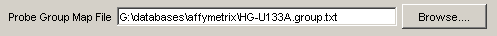

Introduction to the Class Scoring software
ClassScore is a software tool for generating "functional class scores" based on scores given to individual genes, typically from a microarray data set.
This page describes how to use the graphical user interface (GUI) but contains general information relevant to the command line tool as well. There is also command line tool which is very primitive and largely undocumented. T
Installing the software
You must have a recent java runtime (1.4+) installed on your machine. You can get it from Sun but there is a good chance it is already installed on your machine.
Once you have a java runtime, just copy the software files to your hard drive in some convenient location.
Note: You will need at several files besides the data you provide in order to run the analysis. These files contain the annotations for GO categories and common microarray designs. You can download these files from our web site.
Running the software
Just double-click on 'classScore.jar'. You may see a plain text 'console' window but shortly a graphical window should appear containing several fields for input. To perform a run, you have to set the fields appropriately and then press "OK". You can perform multiple runs without closing and restarting the software. The window should like something like this (we're working on the interface, so if it looks a little different, don't be alarmed).

Inputs
The following fields must be set by the user on startup.
- Gene Score File

A user-supplied file containing the data. This is a set of gene scores (currently these should be p-values, which the software converts to -log(pvalues)). The first column is the probe id, the second column is the p value. A one-line header is expected.
- GO Biological Names File:

A file containing the names of the gene classes. We supply this.
- Probe to Group Mapping File:
A file containing a list of the 'duplicates' for the array. This is needed if you use 'weights'. We supply this file.
- Probe to GO mapping file:

A file containing a list of the class membership of probes on the array. We supply this.
- Output File:

A name of an output file. Your results will be saved to this file.
Options
- Mean, or Median:

Choose one method to be used for class scoring. See descriptions below for details. Hypergeometric (binomial, actually) p values are always generated as well. Default=mean - Use mean/max/single gene p values:

This refers to how 'replicates' of genes are handled. A replicate is when two probes on an array assay the same gene, as indicated in the 'probe to group mapping file'. Default=mean
- Count all occurrences separately: Ignores the replicate issue entirely and treats each probe as a separate gene. This can yield inflated (or deflated) class scores so normally you won't use this option. (we keep it for experimental purposes)
- Use best scoring repliate: If a gene occurs twice (or more) in the data, it is only counted once, and given the score of the best-scoring replicate. This option is less conservative than using the mean. We use it as the default.
- Use mean of replicates: A single value is calculated for all data points representing the gene. This value is the mean of the pvalues for all probes in the group. This option assumes that taking the mean is a sensible thing to do: if you don't log transform your pvalues (by checking the 'log transform' box, explained below), this won't work right.
- Iterations: This sets the number of random trials which will be used to generate background distributions. The higher you set this, the longer it will take to run, but your p-values may be more precise. We don't suggest setting this above 200,000 unless you find you have many classes which have 'maxed out' p values. Default=100,000
- Min class size: Classes with fewer genes than this will not be evaluated. Default=4
- Max class size: Classes with more genes than this will not be evaluated. Default=150
- ORA score threshold: This option sets the gene score which will be applied for the binomial distribution p values. Default=0.001 (assuming you are using p values)

Ready to run?
- The "Run analysis" button starts the process of calculating the scores. This can take a few minutes especially if you have set a large number of iterations. The status bar will say "Running" once the run is underway.
- The "Cancel" button will abort your run. The status bar should read "Ready" after you hit cancel.
- The "Stop" Button quits the software. This can also be done by clicking on the 'close' box on the window title bar.
When the software is done, the status bar will read "Done" and you can open the output file in Excel or a similar software package to examine it.
Outputs
- The output is a text file that contains the results for each class in a simple tabular format. The best-scoring classes (based on the resampling-based score) are listed first. The output file can be opened in Excel and sorted etc. easily. The columns are:
- class : Name of the class, with the GO id number.
- size : How many probes on the array are in the class.
- raw score : The raw class statistic based on the selected method. High values are better.
- score pval : The p value based on the raw score. Low values are better. Note that p values that would be calculated as zero are adjusted to be 1/(2*iterations). Thus if you had 100,000 iterations, the best p value would be 1/(2*100000) or 5x10^-6.
- effective size : How many unique genes are in the class. This is always less than or equal to the size since some genes are represented multiple times on an array. This is the value used in the calculations.
- N over pval cut: For overrepresentation analysis, the number of genes which met the criterion set in "ORA score threshold"
- hyper pval : p-value for the classed based on the hypergeometric distribution. Note that this is actually calcualted using the binomial approximation.
- Corrected pva: An experimental feature to apply multiple test correction to the resampling-based class scores. The method used is Benjamini-Hochberg's false discovery rate. Rows where this column is 1 meet a FDR criterion of 0.05.
- Same as: Lists classes that are identical in the genes they contain to the one listed in the first column. Most slots will be blank.